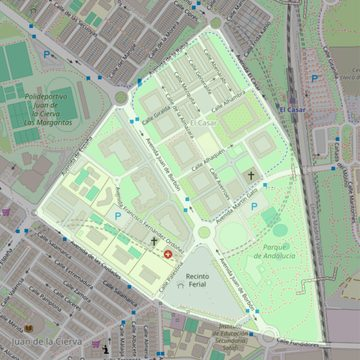

Santa Maravillas de Jesús
- Arciprestazgo
- Getafe
- Población
- Getafe
- Dirección postal
- c/ Medina Azahara, 2
- Código postal
- 28903
- Extensión
- 0,49 km² (49 ha)
- Teléfono
- 916 832 101
- Correo electrónico
- santamaravillas-getafe@diocesisgetafe.es
- Información demográfica
- De la parroquia · De la población (Getafe) · Del arciprestazgo (Getafe)


Descargar mapaLímites según decreto
"Partiendo de la confluencia de la Avenida de las Ciudades con la Avenida de España, arrancan por el eje de la prolongación de la Avenida de España (en dirección norte); continúan por el eje de la Avenida de la Rabia (en dirección noreste), por el eje de la Avenida de El Casar (en dirección sureste), por una línea imaginaria hasta el ferrocarril Madrid-Alicante-Cádiz (en dirección este), por el eje de las vías del ferrocarril Madrid-Alicante-Cádiz (en dirección sureste), por el eje de la calle Fundidores (en dirección suroeste) y por el eje de la Avenida de las Ciudades (en dirección oeste) hasta el encuentro con la Avenida de España, punto de partida" (Decreto de erección de 16-JUL-99; B.O. Octubre-99, pág. 831)